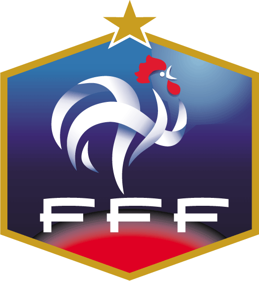

Apesar de ser o atual vice-campeão mundial, pode-se dizer que o técnico Raymond Domenech nunca viveu um caso de amor com a França. O treinador, inclusive, chega à sua segunda Copa do Mundo no auge do desgaste com a torcida. A péssima campanha na Eurocopa e a classificação para a África do Sul apenas na prorrogação da repescagem graças a um gol após toque de Henry deixaram exposta a desconfiança de um cada vez mais reticente povo francês.
Da geração de 2006, quatro permaneceram entre os titulares: Gallas, Abidal, Ribéry e Henry. Houve a renovação tão pedida pelos críticos, mas os Bleus seguem ainda sem convencer dentro de campo. Além do craque do Bayern de Munique, muitos apostam as fichas na afirmação de Yoann Gourcuff, meia de 23 anos do Bordeaux. Benzema, outro jovem, é preterido no ataque por Anelka, que vive boa fase.
A campanha da França em 2010 ainda é uma incógnita, mas a dificuldade com que tem obtido alguns resultados mostram que a seleção está mais próxima da decepção de 2002 do que da surpresa em 2006. Mesmo com relativa qualidade à disposição.